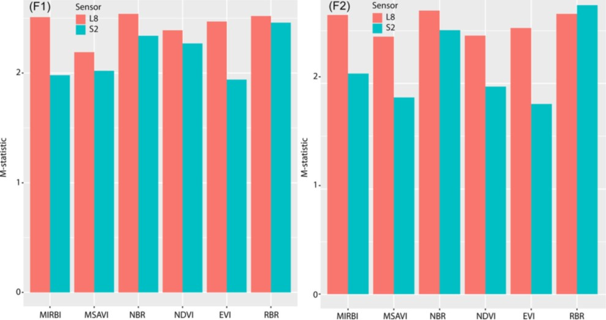

1.1 Summary
For the first lecture in this module, we got introduced to the world of remote sensing cities, where we discovered the methods used for data collection using sensors that are mounted on diverse platforms (space-borne/airborne). Then we discussed the two types of sensors: passive which perceive natural radiation, and active, which radiate their own radiation. Then we explored the differences in terms of spectral bands, spatial resolution, and revisit frequency between Sentinel 2 and Landsat satellites. Finally, the attractive part for me was to know that electromagnetic radiation can be obstructed by surfaces or atmosphere which cause absorption,transmission, or scattering.
1.1.1 Remote sensing definition
According to NASA “Remote sensing is the acquiring of information from a distance” (Earth Science Data Systems 2019). By observing the energy response (reflected, transmitted) and recording information then use it in responding to hazards, apply energy studies utilizing, urban planning, and environmental treaty enforcement…..etc.
1.1.2 The process of remote sensing
Electromagnetic energy, created by moving charged particles, travels in waves through space and the atmosphere. These waves vary in length and frequency; shorter waves have higher frequencies. Electromagnetic waves might get obstructed by a surface or atmosphere which cause scattering for the short wave such as blues and then it reflects back to be recorded and processed to information/data.
1.1.3 Sentinel-2 VS Landsat
Sentinel-2 contains two satellites orbiting around the earth in the same path, but 180° spaced apart. These two satellites have a rapid visit time of 10 days at the equator and a wide area of coverage as they are designed to continuously detect changes in land surface conditions. (“Sentinel-2 - Missions - Sentinel Online,” n.d.)
Landsat 8 holds two main instruments which are: the Operational Land Images (OLI) and the Thermal Infrared Sensor (TIRS). These sensors works on providing images of the earth surface at several resolution, and that includes for visible, near-infrared, and short infrared a 30m, for Thermal data 100m, and for panchromatic data a 15m. (“Landsat 8 | Landsat Science” 2021)
1.2 Application
Landsat and Sentinel 2 have been used extensively in different fields including land use planning and monitoring, emergency response and management, water use monitoring and others. Each one of those two methods has its strengths and to understand those strengths, I will discuss an analysis that was conducted to evaluate and compare two data sources in forest fires mapping which is: Evaluation and comparison of Sentinel-2 MSI, Landsat 8 OLI, and EFFIS data for forest fires mapping. Illustrations from the summer 2017 fires in Tunisia : (Achour et al. 2022)
This analysis compares and assesses spectral indices derived from Sentinel-2 and Landsat-8 OLI imagery and to identify the most appropriate index for each sensor for accurately mapping forest fires, using as a case study two fire events that occurred in summer 2017 in northern Tunisia (Achour et al. 2022, Toujani et al. 2022).

1.2.1 Discussion
Results from this study highlight those spectral indices including NIR-SWIR bands derived from Landsat 8 OLI and Sentinel-2 MSI (ΔNBRn, ΔNBR and RBR) had higher discriminatory power than classical indices based on NIR and red bands (BAI, ΔNDVI, ΔEVI, and ΔMSAVI).
In the figure below, we can see that spectral indices derived from Landsat 8, especially those combining the Red-NIR bands such as ΔNDVI, ΔEVI and ΔMSAVI exhibited a higher spectral separability as compared to their counterparts generated from Sentinel bands in both fires.

Maps of the estimated burned areas from each spectral index and for each fire reveals that both Landsat 8 and Sentinel-2A can capture the boundaries of fires identified using Copernicus EMS reference maps, albeit with small differences between burned areas, retrieved from each sensor.
Sentinel-based spectral indices (ΔNBRn and RBR) provided the highest level of positional accuracy, with a loc value of about 60 metres. This means that the positions of the extracted fires were shifted approximately by three pixels from their positions in the reference map. However, Landsat-based spectral indices, RBR and ΔNBR, displayed a loc value of about 75 meters, suggesting that the position of the extracted fires were shifted approximately 2.5 pixels from their positions in the reference map. The advantage of Sentinel 2A in terms of positional accuracy could be attributed to its higher spatial resolution as compared to Landsat 8.


1.2.2 Conclusion
The study concluded that (1) regardless of the sensor, spectral indices that incorporated NIR-SWIR bands exceed those using red and NIR bands in terms of spectral separability; (2) from the viewpoint of accuracy, the Sentinel sensor is slightly more efficient than the Landsat 8 in mapping burned scars, but both sensors produce similar and acceptable results. Hence, this paper concludes that both sensors are a good alternative to EFFIS data, particularly when there is a need to detect details inside the fire. From those results we can clearly see that both Sentinel and Landsat 8 sensors are very powerful in detecting burned areas affecting forests or residential areas, this can be applied in different context whether in responding to catastrophes or implementing new policies to protect those affect areas. Obviously this can be expanded in further studies and applied to other environmental issues like deforestation and many more.
1.3 Reflection
This lecture wasn’t easy to digest at first, as there was a lot of new ideas and terms (Spectral, Spectrum, Spectral Signature…etc ) to learn. when I went through the lecture it was captivating the facts that we learned for example the scattering of EMR and how the process of gathering satellite images is not as easy and simple as i thought, plus it was really interesting knowing why the sky and sea are blue. This lecture opened my eyes to the uses of satellite data and the importance of it and how it can be used in different areas and in very different methods but what was really interesting for me is the paper that i found on the use of satellite images in capturing the socioeconomic disruption during the Ukrainian war. In this study they combined satellite data on nitrogen dioxide (NO2) and carbon dioxide (CO2) to track changes in human activities, as both gases are linked to fossil fuel combustion. the analysis reveals a significant decrease in NO2 levels over major Ukrainian cities, power plants, and industrial areas during the second quarter of 2022, ranging from 15% to 46% compared to the reference period of 2018-2021. They also used the detection of unusual fire which might be likley from shelling rather than agricultural burning (Ialongo et al. 2023).These findings demonstrate the value of satellite observations in monitoring significant societal changes, particularly during conflicts.
References
Evaluation and comparison of Sentinel-2 MSI, Landsat 8 OLI, and EFFIS data for forest fires mapping. Illustrations from the summer 2017 fires in Tunisia. (Achour.H, Toujani.A 2021).
Satellites capture socioeconomic disruptions during the 2022 full‑scale war in Ukraine. (Ialongo.I, Bun.R 2023).